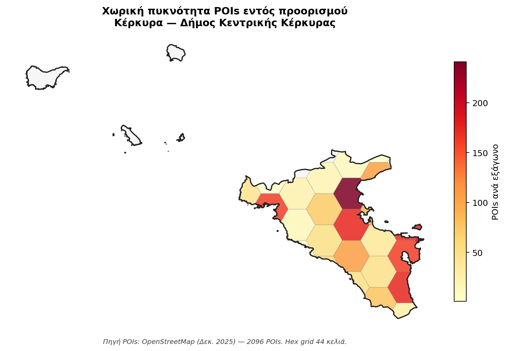

Σύνοψη Διοίκησης
Η Κέρκυρα είναι ο πιο πιεσμένος προορισμός της δεκάδας: 2,67 εκ. αφίξεις το 2024 (87,6% αλλοδαποί), μαζικός νησιωτικός κορεσμός σε ώριμο στάδιο. Είναι ο μοναδικός προορισμός όπου η κλάση «Επιφυλακτικοί κάτοικοι» κυριαρχεί στην κοινωνική στάση (30,0%) και η αντιληπτή πίεση είναι η υψηλότερη του παραδοτέου (+0,70). Παρόλα αυτά, το προϊόν παραμένει εξαιρετικό — UNESCO World Heritage Site με την Παλιά Πόλη. Στρατηγική προτεραιότητα: συντονισμένη παρέμβαση σε τέσσερις άξονες (ρύθμιση βραχυχρόνιας μίσθωσης, διαφοροποίηση προϊόντος, εμπλοκή κατοίκων, αποεποχικοποίηση).
Τι σημαίνει πρακτικά
Η Κέρκυρα είναι ο μοναδικός προορισμός με αρνητική κοινωνική ισορροπία στο σύνολο της μελέτης. Δεν χρειάζεται περισσότερη προβολή — χρειάζεται άμεση, συντονισμένη παρέμβαση διαχείρισης: ρύθμιση βραχυχρόνιας μίσθωσης, αναβάθμιση υποδομών, διαχείριση επισκεπτών στην Παλιά Πόλη, ενίσχυση ενδοχώρας, και συμμετοχικός φορέας διαχείρισης προορισμού (DMMO).
Ενότητα 01
Επισκόπηση
Δεκαέξι δείκτες-κλειδιά που τοποθετούν την Κέρκυρα σε προχωρημένη φάση Butler TALC (Στάδιο 4-5): ώριμος προορισμός σε ζώνη κρίσιμης πίεσης — TII 26,33 (2η μετά Μύκονο), ακραία εποχικότητα (Gini 0,545 κορυφή των 10), μοναδική κυρίαρχη «Επιφυλακτικοί κάτοικοι» (Αντιπαλότητα) LCA (30,0%), POI θ̂ +0,70 (υψηλότερη της δεκάδας).
Στρατηγική σύνοψη
Ώριμος προορισμός σε στάδιο κοινωνικής αντιπαλότητας κατά Doxey — επείγουσα δράση.
Η Κέρκυρα εμφανίζει χαρακτηριστικά ώριμου προορισμού σε προχωρημένη φάση Butler TALC: ισχυρότατη διεθνής ζήτηση (87,6% αλλοδαποί, 2,67 εκ. αφίξεις 2024 — κορυφή των 10), TII = 26,33 (+135% σε 14 χρόνια, 2η μετά τη Μύκονο), επιταχυνόμενη STR ανάπτυξη (16,1% μερίδιο διανυκτερεύσεων, 2.048 νομικές μονάδες έναντι 413 ξενοδοχείων — αναλογία 5:1), POI θ̂ = +0,70 (υψηλότερη υποκειμενική πίεση όλης της δεκάδας).
Διατηρούνται όμως ισχυρά πλεονεκτήματα: Παγκόσμια Κληρονομιά UNESCO (Παλιά Πόλη, 2007), 96% εξαιρετική ποιότητα υδάτων κολύμβησης, 16 Blue Flag ακτές, 9 Natura 2000 περιοχές (1.653,92 km²), 5.295 POIs στη συνολική ΠΕ (2.131 εντός Δ. Κεντρικής Κέρκυρας), αεροπορική και ακτοπλοϊκή προσβασιμότητα δωδεκάμηνη, υψηλή ALoS 5,36 νύχτες, κοσμοπολίτικη πολυπολιτισμική ταυτότητα.
Η στρατηγική θέση είναι ήδη «στάδιο κοινωνικής αντιπαλότητας κατά Doxey» (Στάδιο 4): 30,0% κατοίκων σε LCA «Επιφυλακτικοί κάτοικοι» (Αντιπαλότητα) — η υψηλότερη τιμή μεταξύ των δέκα προορισμών —, δραματική κρίση δημόσιων υποδομών στην αντίληψη κατοίκων (επάρκεια 6–18% σε τοπικό οδικό, στάθμευση, απορρίμματα, ύδρευση, υγεία), 86,1% αναγνωρίζει υπέρμετρη επιβάρυνση ενοίκων από STR. Προτεραιότητες: επείγουσα ρύθμιση STR, υποδομική παρέμβαση, αξιοποίηση UNESCO για αποεποχικοποίηση, σύσταση DMMO με συμμετοχική διακυβέρνηση 50/25/25.
Χωρική Ανάλυση
Χωρική απεικόνιση
Πού βρίσκεται ο προορισμός στον εθνικό χάρτη πίεσης-ικανοποίησης, και πώς κατανέμεται η σχέση κατοίκου-τουρισμού εντός του.
Σχήμα · Χωρική ανάλυση εντός προορισμού
Δήμος Κεντρικής Κέρκυρας — POI χωρική πυκνότητα

Χωρική πυκνότητα σημείων τουριστικού ενδιαφέροντος (POIs OpenStreetMap) σε hex-grid εντός των ορίων του Δήμου. Πορτοκαλί ένταση δηλώνει υψηλότερη χωρική συγκέντρωση τουριστικής υποδομής.
Συγκριτικό · Αντικειμενική × Υποκειμενική πίεση
Θέση στον bivariate χάρτη TFI × Ικανοποίηση κατοίκων

Συνδυασμός αντικειμενικού δείκτη φέρουσας ικανότητας (TFI Defert 2024) και υποκειμενικής ικανοποίησης κατοίκων (Q9_SAT) σε ένα δι-διαστάσιμο choropleth. Τέσσερις διακριτές καταστάσεις προορισμού.
Ενότητα 02
Ζήτηση & Προσφορά
Δεκατέσσερα έτη εξέλιξης ζήτησης (2010–2024), ξενοδοχειακό δυναμικό 50.713 κλινών σε 413 μονάδες με κυριαρχία 4-5★ (57,1% δωματίων), αγορά βραχυχρόνιας μίσθωσης 2.048 μονάδων που έφτασε το 16,1% των διανυκτερεύσεων.
Σχήμα 5.1 · Αφίξεις 2010–2024
Εκρηκτική διεθνής επέκταση: 1,19 εκ. → 2,34 εκ. αλλοδαποί (CAGR +7,81%)
Πηγή: ΕΛΣΤΑΤ STO12 T03 (αφίξεις σε ξενοδοχειακά καταλύματα). 87,6% αλλοδαποί επισκέπτες το 2024 — 2η υψηλότερη μετά τη Μύκονο.
Σχήμα 5.2 · Δείκτης ανάκαμψης 2024/2019
Πλήρης ανάκαμψη και υπέρβαση — recovery ratio 1,178
Σύγκριση 10 προορισμών. Λόγος >1 σημαίνει ξεπέρασε την ανάκαμψη. Κέρκυρα 2η μεταξύ ώριμων.
Σχήμα 5.3 · Μηνιαία κατανομή 2024
Συγκέντρωση 4 μηνών αιχμής (Ιούν–Σεπ): 76,1% αφίξεων
Πορτοκαλί = αιχμή · σκούρο μπλε = ώμος · ανοιχτό μπλε = χαμηλή. ΕΛΣΤΑΤ STO12 T13, Περιφέρεια Ιονίων Νήσων (EL62).
Σχήμα 5.4 · Εποχικότητα: Συντελεστής Gini
Σταθερά υψηλή εποχικότητα — μετα-πανδημική ενίσχυση
Gini 0,545 (2024) > Μύκονος 0,512 > Χανιά 0,478 > Ναύπλιο 0,333. Στόχος 2030: ≤0,45 (benchmark Μαγιόρκα).
Σχήμα 5.6 · Ξενοδοχειακή δυναμικότητα 2015–2024
Κλίνες +12,6% σε δεκαετία — μονάδες σταθερές (+1,7%)
ΕΛΣΤΑΤ STO12 T01. Κατακόρυφη εντατικοποίηση: 111 → 123 κλίνες/μονάδα (+11%). WHS + Natura περιορίζουν χωρική επέκταση.
Σχήμα 5.5 · Δωμάτια ανά κατηγορία αστεριών (2024)
Κυριαρχία 5★ (29,8%) και 4★ (27,3%) — 57,1% premium
38 μονάδες 5★ × 200 δωμ./μονάδα — η μέγιστη μέση κλίμακα στους πέντε ώριμους. Resort-type, all-inclusive ΒΑ ακτή.
Σχήμα 5.7 · Μηνιαίο ποσοστό πληρότητας 2024
Αιχμή Αυγούστου 97,0% — Ιανουάριος μόλις 3,4%
Περιφέρεια Ιονίων Νήσων (NUTS2 EL62). Υψηλότερη πληρότητα Αυγούστου μεταξύ ώριμων (vs Χανιά 86,3%, Μύκονος 91,7%) — πρακτικός κορεσμός.
Σχήμα 5.8 · Μέση διάρκεια παραμονής (ALoS)
Μείωση −0,9 ημέρες σε 14 έτη (από 6,28 σε 5,36)
−0,067 νύχτες/έτος (p<0,001). Παρά την πτώση, η ALoS Κέρκυρας υπερτερεί έναντι Μυκόνου (3,43), Χανίων (4,67), Βόλου (2,82), Ναυπλίου (2,71).
Σχήμα 5.9 · Μερίδιο STR έναντι ξενοδοχείων (2020–2024)
Από 6,8% σε 11,9% αφίξεων / από 9,6% σε 16,1% διανυκτερεύσεων — ταχύτατη μετατόπιση
Αφίξεις
Διανυκτερεύσεις
INSETE STR Intelligence + AirDNA. 2.048 νομικές μονάδες STR (NACE 552) vs 413 ξενοδοχεία — αναλογία 5:1 (υψηλότερη μεταξύ ώριμων). Τζίρος STR 115,8 εκ. € (2023, +137% vs 2016).
Ενότητα 03
Τουριστικό προϊόν
Από 5.295 σημεία τουριστικού ενδιαφέροντος σε επίπεδο ΠΕ (2.131 εντός του δειγματοληπτηθέντος Δήμου Κεντρικής Κέρκυρας) μέχρι την αξιολόγηση 15 διακριτών υποδομών από τους κατοίκους — η αξιολόγηση «τι λειτουργεί καλά» στον προορισμό.
Σχήμα 5.10 · Σημεία Τουριστικού Ενδιαφέροντος (POIs OSM)
2.131 POIs Δ. Κεντρικής Κέρκυρας — υψηλή πυκνότητα 4,34 POIs/km²
OpenStreetMap Overpass API, εξαγωγή 2025, Δήμος-clipped. Κατηγορίες: παραλίες, μουσεία, εστίαση, καταλύματα, αξιοθέατα. ΠΕ Κερκύρας: 5.295 POIs συνολικά.
Σχήμα 5.11 · IPA Quadrant — Σπουδαιότητα × Αξιολόγηση υποδομών
Δημ. Υγεία και Ύδρευση στο τεταρτημόριο «Συγκέντρωση εδώ»
Τι δείχνει αυτό το γράφημα; (πλήρης οδηγός)
Το IPA Quadrant (Importance-Performance Analysis, Martilla & James 1977) είναι στρατηγικό εργαλείο που μας λέει τι να κάνουμε για κάθε υποδομή. Είναι 2-διαστάσιμο: κάθε υποδομή τοποθετείται με βάση πόσο σημαντική είναι (οριζόντιος άξονας) και πόσο καλά λειτουργεί (κάθετος άξονας).
Άξονας x — Σχετική Σπουδαιότητα (0-1): Δείχνει πόσο η αξιολόγηση μιας υποδομής εξηγεί τη συνολική ικανοποίηση των κατοίκων. Παράγεται από Random Forest μοντέλο. Τιμή 0,30 ≈ η υποδομή αυτή είναι ένας από τους κύριους «προσδιοριστές» της ικανοποίησης. Τιμή 0,10 ≈ μικρή στατιστική σύνδεση με τη συνολική ικανοποίηση.
Άξονας y — Μέση Αξιολόγηση Κατοίκων (1-5): Πόσο καλά οι κάτοικοι αξιολογούν αυτή την υποδομή. 5 = εξαιρετική, 1 = πολύ ανεπαρκής, 3 = μέτρια.
Δύο διακεκομμένες γραμμές διαχωρίζουν το γράφημα στα 4 τεταρτημόρια πάνω στις διάμεσες τιμές. Κάθε τεταρτημόριο = διαφορετική στρατηγική προτεραιότητα:
- Συγκέντρωση εδώ (κάτω-δεξιά): υψηλή σπουδαιότητα + χαμηλή αξιολόγηση. ΚΡΙΣΙΜΗ ΠΑΡΕΜΒΑΣΗ ΕΔΩ. Υποδομές που οι κάτοικοι κρίνουν σημαντικές αλλά λειτουργούν κακά.
- Διατήρηση καλής επίδοσης (πάνω-δεξιά): υψηλή σπουδαιότητα + υψηλή αξιολόγηση. Συνεχίστε όπως είναι — μην αλλάξετε αυτά που λειτουργούν.
- Χαμηλή προτεραιότητα (κάτω-αριστερά): χαμηλή σπουδαιότητα + χαμηλή αξιολόγηση. Λειτουργούν μέτρια, αλλά δεν επηρεάζουν πολύ τη συνολική ικανοποίηση. Δευτερεύουσα προτεραιότητα.
- Πιθανή υπερβολή (πάνω-αριστερά): χαμηλή σπουδαιότητα + υψηλή αξιολόγηση. Λειτουργούν εξαιρετικά αλλά οι κάτοικοι δεν τις θεωρούν κρίσιμες. Πιθανώς υπερ-επένδυση.
Παράδειγμα: πώς να διαβάσετε ένα σημείο
Έστω ότι μια υποδομή Α έχει συντεταγμένες (0,28 · 2,5). Σημαίνει: η σπουδαιότητά της είναι 0,28 (πάνω από μέσο όρο των υπολοίπων), αλλά η αξιολόγησή της 2,5/5 (κάτω από μέσο όρο). Πέφτει στο τεταρτημόριο «Συγκέντρωση εδώ» — δηλαδή είναι κρίσιμη ανάγκη παρέμβασης.
⚠ Παράδοξο: «Σπουδαιότητα» ≠ διαισθητική σημασία
Η Σπουδαιότητα στο IPA δεν είναι αυτό που πιστεύουν οι κάτοικοι ότι είναι σημαντικό, αλλά αυτό που στατιστικά εξηγεί την ικανοποίησή τους. Παράδειγμα: αν η Στάθμευση είναι χρόνια κακή σε έναν προορισμό, οι κάτοικοι την έχουν «παραιτηθεί» — δεν τη συνδέουν με την ικανοποίησή τους πια. Έτσι το Random Forest της δίνει χαμηλό βάρος και φαίνεται «χαμηλή προτεραιότητα» — αν και διαισθητικά είναι κρίσιμη. Διαβάστε προσεκτικά.
Σπουδαιότητα = εξαγόμενο βάρος Random Forest (πόσο η υποδομή εξηγεί τη γενική ικανοποίηση), όχι δηλωτική σημασία. Αξιολόγηση = μέση τιμή σε κλίμακα 1-5. Πορτοκαλί αριθμοί = Τουριστικές υποδομές · Σκούρο μπλε = Δημόσιες υποδομές. Ο πίνακας από κάτω ταξινομεί τις 15 υποδομές κατά Σπουδαιότητα. Επάρκεια δημόσιων υποδομών 6–18%.
Σχήμα 5.10β · Gap Analysis Ζήτησης / Προσφοράς, ΠΕ Κερκύρας
Τέσσερα κρίσιμα κενά τουριστικού μοντέλου
Σύνθεση ποσοτικής έρευνας κατοίκων (n=300), ποιοτικής έρευνας στελεχών (n=5) και δευτερογενών δεδομένων. Κάθε κενό αξιολογείται από τη συνδυαστική σοβαρότητα (έκταση + αντίκτυπος) και αντιστοιχεί σε μία στρατηγική Πρόταση του master plan.
Πολυετής συγκέντρωση Ιούνιο-Σεπτέμβριο
76,1%
αφίξεις Ιουν-Σεπ — το υψηλότερο της δεκάδας
Από τα 2,67 εκ. αφίξεις του 2024, το 76,1% συγκεντρώνεται σε τέσσερις θερινούς μήνες — ακραία εποχικότητα ακόμα και για νησιωτικό προορισμό. Η ετήσια αξιοποίηση κλινών είναι 77% — τυπικά υψηλή — αλλά αυτό αντανακλά πλήρη πληρότητα 4 μήνες + κλειστές υποδομές 8 μήνες. Η περίοδος Δεκέμβριος-Μάρτιος συγκεντρώνει μόλις 2,0% των αφίξεων με πληρότητα 3-4%. Το αεροδρόμιο της Κέρκυρας λειτουργεί de facto εποχικά (Νοέμβριος-Μάρτιος μόνο εθνικές πτήσεις).
Πρακτικά: άνοιγμα χειμερινής σεζόν μέσω all-year flights + heritage tourism (UNESCO Παλιά Πόλη) + γαστρονομία/wellness πακέτα.
Πόλη + ΒΑ ζώνη απορροφούν τις ροές
5.295
POIs ΠΕ Κερκύρας έναντι 2.131 στον Δήμο Κεντρικής Κέρκυρας (πυρήνας)
Η Κέρκυρα διαθέτει 5.295 POIs σε επίπεδο ΠΕ — από τα υψηλότερα μεταξύ ελληνικών νησιών — αλλά η συγκέντρωση είναι έντονη: η Πόλη + βορειοανατολική ζώνη (Δασιά, Ίψος, Μπαρμπάτι, Νισσάκι) απορροφούν τους περισσότερους επισκέπτες. Το Νότιο τμήμα (Λευκίμμη, Κάβος) εξαρτάται από στοχευμένη παρτυτουριστική αγορά και έχει πάθει κορεσμό αλλού τύπου. Το Δυτικό (Παλαιοκαστρίτσα, Λιαπάδες, Άγιος Γόρδης) παραμένει χωρικά υπο-εξυπηρετούμενο παρά τους πόρους.
Πρακτικά: χωρική διαφοροποίηση: διαφορετική στρατηγική για ΒΑ (premium ποιοτική αναβάθμιση) vs Νότο (rebranding απομάκρυνση από παρτυτουρισμό).
Παλιά Πόλη UNESCO υπο-αξιοποιημένη
19%
επισκεπτών μουσείων / σύνολο αφίξεων — αναλογία πολιτιστικής κατανάλωσης
Παρά το ότι η Παλιά Πόλη της Κέρκυρας είναι UNESCO World Heritage Site από το 2007, η μέση επίσκεψη πολιτιστικών χώρων από τουρίστες παραμένει στο 19%. Παράλληλα, η μέση δαπάνη ανά επισκέπτη είναι 39,8 €/ημέρα — χαμηλή έναντι των premium ξενοδοχειακών υποδομών (57% δωμάτια 4-5★). Η αιτία είναι η all-inclusive trap: ένας μεγάλος αριθμός 4-5★ ξενοδοχείων πωλεί all-inclusive πακέτα που εγκλωβίζουν τη δαπάνη εντός του ξενοδοχείου, χωρίς να ωφελεί την τοπική οικονομία ή τη heritage εμπειρία.
Πρακτικά: πρόγραμμα ένταξης UNESCO Παλιάς Πόλης σε πακέτα ξενοδοχείων + απομάκρυνση all-inclusive μέσω κινήτρων διαφοροποιήσεων.
Στεγαστική κρίση από βραχυχρόνια μίσθωση
86,1%
κατοίκων αναγνωρίζει στεγαστική πίεση από STR — η υψηλότερη resident-side αναγνώριση μεταξύ ώριμων
Το 86,1% των κατοίκων αναγνωρίζει ότι η βραχυχρόνια μίσθωση πιέζει το ενοίκιο και τη στέγαση μόνιμων κατοίκων. Η αναλογία STR listings προς ξενοδοχειακές μονάδες είναι 5:1 (2.048 vs 413) — το υψηλότερο της μελέτης. Ο STR τζίρος στην ΠΕ Κέρκυρας φτάνει τα 115,8 εκ. € (+137% από 2016). Η αγορά γίνεται de facto corporate: μεγάλοι διαχειριστές με 20+ ακίνητα έχουν ξεπεράσει τους τοπικούς ιδιοκτήτες, αλλάζοντας τη φύση της αγοράς ενοικιάσεων από συμπληρωματική σε διαρθρωτική.
Πρακτικά: άμεσο πλαφόν STR ανά Δ.Ε. + STR registry για corporate listings + φόρος διασποράς στους mass operators. Στρατηγική προτεραιότητα #1.
Πηγές: Πρωτογενής ποσοτική έρευνα κατοίκων Δήμου Κεντρικής Κέρκυρας (n=300)· ΕΛΣΤΑΤ STO12· INSETE Intelligence. Η Κέρκυρα συγκεντρώνει το υψηλότερο POI θ̂ (+0,70) και τη μοναδική κυρίαρχη Επιφυλακτικοί κάτοικοι κοινωνική κλάση (30,0%) της μελέτης. Άμεσα κρίσιμη παρέμβαση.
Ενότητα 04
Οικονομία
54,6% της Ακαθάριστης Προστιθέμενης Αξίας προέρχεται από τομείς G-I (Εμπόριο, Μεταφορές, Κατάλυμα, Εστίαση). Ο τουρισμός συγκροτεί 4.209 νομικές μονάδες, 751,6 εκ. € τζίρο και 22.710 εργαζόμενους — 61,6% κατοίκων εξαρτώνται οικονομικά από τον τουρισμό.
Σχήμα 5.12 · Εκτιμώμενος τζίρος καταλυμάτων
Ξενοδοχεία 383,8 εκ. € · STR 115,8 εκ. € (2023)
ΕΛΣΤΑΤ SBR01 T10. Ξενοδοχεία +57% τζίρος/μονάδα (2016–23), STR +130% — STR ωριμάζει χωρίς αύξηση μονάδων.
Σχήμα 5.13 · ΑΠΑ G-I έναντι σύνολο
Ανάκαμψη +40,7% G-I post-COVID (2020 → 2023)
Eurostat nama_10r_3gva (NUTS3 EL621). Πτώση G-I το 2020 (−34,7%) διπλάσια της συνολικής ΑΠΑ (−22,7%) — δομική ευαλωτότητα μονοκαλλιέργειας.
Σχήμα 5.13β · Στρατηγικό τεταρτημόριο: Οικονομική εξάρτηση × Ικανοποίηση
«Κοινότητα εξαρτημένη από τουρισμό σε ζώνη κρίσιμης πίεσης» (61,6% × 3,54)
Πρωτογενής έρευνα κατοίκων (n=300 Δ. Κεντρικής Κέρκυρας), σταθμισμένα ποσοστά εξάρτησης και μέση συνολική ικανοποίηση (δήλωση γενικής ικανοποίησης).
Σχήμα 5.14 · Νέες οικοδομικές άδειες & επιφάνεια (2015–2025)
+160% σε δεκαετία — μέση επιφάνεια/άδεια +26% (218 → 274 m²)
ΕΛΣΤΑΤ SOP03. Γκρι 2025 = προσωρινά (11μηνο). 10 χρόνια εκρηκτικής κατασκευής χωρίς αντίστοιχη ανανέωση δημόσιων υποδομών.
Ενότητα 05
Κοινωνία
Φέρουσα ικανότητα, ποιότητα ζωής, στεγαστική κρίση από βραχυχρόνια μίσθωση, κοινωνική στάση κατοίκων μέσω Doxey Irridex και Latent Class Analysis. Η Κέρκυρα στη Ζώνη Κρίσιμης Πίεσης — μοναδική μεταξύ ώριμων με αρνητικό LCA balance.
Μεθοδολογικό κουτί 5.5.α — Γιατί χρησιμοποιούμε Defert TFI/TII
Ο Γάλλος γεωγράφος Pierre Defert εισήγαγε τον TFI το 1967 ως πρώτη συστηματική ποσοτικοποίηση τουριστικής λειτουργίας: TFI = κλίνες/πληθυσμός × 100. Ο TII είναι μεταγενέστερη επέκταση που μετρά διανυκτερεύσεις/πληθυσμό × 100. Τα απόλυτα νούμερα δεν λένε αν ένας προορισμός είναι «μικρός υπερβολικά τουριστικός» ή «μεγάλος ισορροπημένος» — οι Defert δείκτες αναγάγουν την κλίμακα. Η Μύκονος με ~17.000 κλίνες σε 10.700 κατοίκους έχει TFI 158, ενώ η Κέρκυρα με 50.713 κλίνες σε 101.600 κατοίκους έχει TFI Defert canonical 49,9 (κλίνες×100/πληθυσμό). Σε ξενοδοχειακό-μόνο υπολογισμό η τιμή είναι 38,64 (KPI card). Διεθνή κατώφλια ζώνης (Saveriades 2000, Coccossis & Mexa 2004): TII < 5 χαμηλή πίεση, 5–10 μέτρια, 10–15 υψηλή, >15 πολύ υψηλή. Η Κέρκυρα: TII 26,33 (2024) σε ζώνη πολύ υψηλής πίεσης, +135% σε 14 χρόνια.
Σχήμα 5.15 · Δείκτης Τουριστικής Έντασης (TII) Defert 2010–2024
Από 11,22 σε 26,33 — υπερδιπλασιασμός σε 14 έτη (+135%)
Διανυκτερεύσεις / κάτοικο × 100. Όριο πολύ υψηλής πίεσης (Defert) στη γραμμή TII = 15. Κέρκυρα τη ξεπέρασε ήδη το 2015.
Σχήμα 5.15γ · Στρατηγικό τεταρτημόριο: Αντικειμενική × Υποκειμενική πίεση
Κέρκυρα στη Ζώνη Κρίσιμης Πίεσης (TFI 38,64 · POI θ̂ +0,70 υψηλότερη της δεκάδας)
POI θ̂ μέσω IRT-GRM (Samejima 1969). TFI σε log10 για visual ισοκατανομή. Διαφορά Κέρκυρα–Χανιά: +0,14 τυπικές αποκλίσεις (z=2,7, p<0,01).
Σχήμα 5.16γ · Στρατηγικό τεταρτημόριο: Στεγαστική κρίση από STR
86,1% αναγνωρίζει υπέρμετρη επιβάρυνση ενοίκων — υψηλότερο των 10
Πρωτογενής έρευνα: επιβάρυνση ενοίκων 86,1%, STR διαθεσιμότητα 85,6%, STR πρόβλημα στέγης 81,2%. POI θ̂ driver items: στεγαστική επίδραση (a=1,84), ανταγωνισμός χώρου (a=1,71).
Σχήμα 5.16 · Doxey Irridex Heatmap — Σύγκριση 10 προορισμών
Κέρκυρα: ισχυρή αρνητική κλίση — μοναδική με κυρίαρχη «Επιφυλακτικοί κάτοικοι» (Αντιπαλότητα)
Πρωτογενής έρευνα Q1 (12 διαστάσεις Doxey) — μέσες τιμές κλίμακας 1–5. Πράσινο = θετικό, κόκκινο = αρνητικό.
Μεθοδολογικό κουτί 5.6.1.β — Γιατί χρησιμοποιούμε LCA
Η Latent Class Analysis (Lazarsfeld & Henry, 1968 · Hagenaars & McCutcheon, 2002) ομαδοποιεί στατιστικά τους ερωτηθέντες σε εμπειρικά εμφανιζόμενες τυπολογίες, αποκαλύπτοντας υπόρρητους «τύπους κατοίκων» που δεν θα ξεχώριζαν από απλή περιγραφική στατιστική. Σε αντίθεση με a-priori cluster analysis, η LCA εκτιμά πιθανότητες ανάθεσης κάθε ατόμου σε κάθε class με βάση το συνολικό προφίλ απαντήσεων στις 12 διαστάσεις Q1 (Doxey items). Επιλέγουμε 5 classes με βάση BIC + ssaBIC + entropy (LMR-LRT p < 0,01 για k=4 vs k=5· stable improvement σταματά μετά k=5). Τα 5 classes ταιριάζουν με τη Doxey τυπολογία: C1 «Επιφυλακτικοί κάτοικοι» (Αντιπαλότητα) ↔ Antagonism (stage 4), C4 «Αμφιταλαντευόμενοι» (Συγκρ. Ενόχληση) ↔ Annoyance (stage 3), C3 «Αδιάφοροι» (Ήπια Απάθεια) ↔ Apathy (stage 2), C2 «Ενεργοί Υποστηρικτές» (Ενεργή Ευφορία) ↔ Mild euphoria (stage 1), C5 «Ένθερμοι Υποστηρικτές» (Καθαρή Ευφορία) ↔ Pure euphoria (stage 0).
Σχήμα 5.17 · Latent Class Analysis — 10 προορισμοί
Κέρκυρα: μοναδική κυρίαρχη «Επιφυλακτικοί κάτοικοι» (Αντιπαλότητα) 30,0% — αρνητικός πόλος 50,2%
Σταθμισμένο μερίδιο πληθυσμού ανά εμπειρική class (Κέρκυρα n=278 σταθμισμένα). Ταξινόμηση κατά δήλωση γενικής ικανοποίησης ικανοποίηση (αύξουσα).
Σχήμα 5.17γ · Τεταρτημόριο πόλωσης: Class 1 × Class 5
Κέρκυρα στο τεταρτημόριο «Πολωμένη κοινωνία» (30,0% × 22,4%)
Υψηλότατο Class 1 (κορυφή των 10) + σχετικά υψηλό Class 5 = κοινωνία υπό διαίρεση. Σύγκριση: Καστοριά (3,7% × 35,1%) = θετική συναίνεση.
Ποιοτική έρευνα · αυτούσια αποσπάσματα από 5 στελέχη
Φωνές των στελεχών
Ενότητα 06
Περιβάλλον
96% εξαιρετική ποιότητα υδάτων κολύμβησης, 16 Blue Flag ακτές, 9 περιοχές Natura 2000 (1.653,92 km²). Αλλά subjective αντίληψη πίεσης οικοσυστημάτων 72,1% — 2,4× υψηλότερη από Χανιά. Παράδοξο αντικειμενικής ποιότητας έναντι αντιληπτής κρίσης.
EEA Bathing Water · Ποιότητα ακτών κολύμβησης 2024
96,0% «Εξαιρετική», 4,0% «Καλή», 0% ανεπαρκής
European Environment Agency Bathing Water Directive 2024, 75 σημεία παρακολούθησης ΠΕ Κέρκυρας + FEE Blue Flag 2025.
Eurostat sdg_06_60 · Greek WEI+ 2003–2023
Ανοδική πορεία — από 11,5 σε 12,5 σε δεκαετία
4ετής μέσος όρος. Ζώνες: πράσινο <10 χαμηλή · κίτρινο 10–20 μέτρια · κόκκινο >20 έντονη.
Σχήμα 5.16β · Αντίληψη αρνητικών επιπτώσεων (% συμφωνώ + απόλυτα)
Πίεση οικοσυστημάτων 72,1% · άναρχη οικιστική 54,1% · έλλειψη οικοδ. γης 40,3%
Πρωτογενής έρευνα Q3 διαστάσεις περιβαλλοντικής επιβάρυνσης. Σύγκριση 5 ώριμων προορισμών. Σταθμισμένα top-2-box.
Ενότητα 07
Στρατηγική
SWOT ανάλυση (10S/10W/8O/10T), πέντε στρατηγικοί άξονες παρεμβάσεων, και επτά στοχευμένες προτάσεις πολιτικής με χρονοδιάγραμμα 2026–2030. Τρεις προτάσεις χαρακτηρίζονται ρητά ως «Επείγον» (STR, Υποδομές, DMMO).
SWOT Ανάλυση
Πέντε Στρατηγικοί Άξονες
Επτά Στοχευμένες Προτάσεις από την Πρωτογενή Έρευνα
Ενότητα 08
Δεδομένα & Παράρτημα
Πλήρης πρόσβαση στα items της πρωτογενούς έρευνας (n=300 Δ. Κεντρικής Κέρκυρας), στους πίνακες του κεφαλαίου, και στις πηγές δευτερογενών δεδομένων.
Πρωτογενής έρευνα — Όλα τα items
| Item | Μέσος (1–5) | % Συμφωνώ | n valid |
|---|
Μεθοδολογικά Κουτιά
Πηγές δεδομένων
Πηγαίες παρουσιάσεις πρωτογενούς έρευνας
Οι αυτούσιες παρουσιάσεις του φορέα δημοσκοπικής έρευνας με τα πλήρη ευρήματα ποσοτικής και ποιοτικής έρευνας στους κατοίκους και στα στελέχη του προορισμού. Διαθέσιμες ως PDF για μεταφόρτωση.
PDF · Ποσοτική έρευνα
Έκθεση Αποτελεσμάτων Πρωτογενούς Ποσοτικής Έρευνας
Δήμος Κεντρικής Κέρκυρας · n=300 · Μάιος 2026
PDF · διαθέσιμο για μεταφόρτωση
PDF · Ποιοτική έρευνα
Έκθεση Αποτελεσμάτων Ποιοτικής Έρευνας σε Στελέχη
5 σε βάθος συνεντεύξεις στελεχών τουριστικού οικοσυστήματος · Μάιος 2026
PDF · διαθέσιμο για μεταφόρτωση